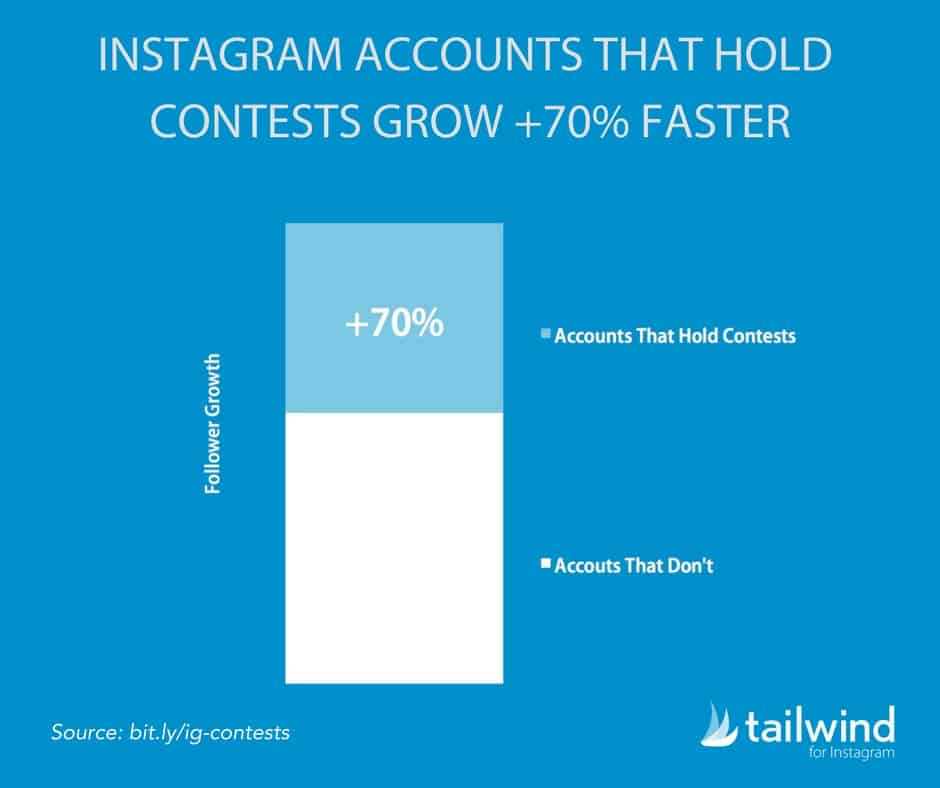
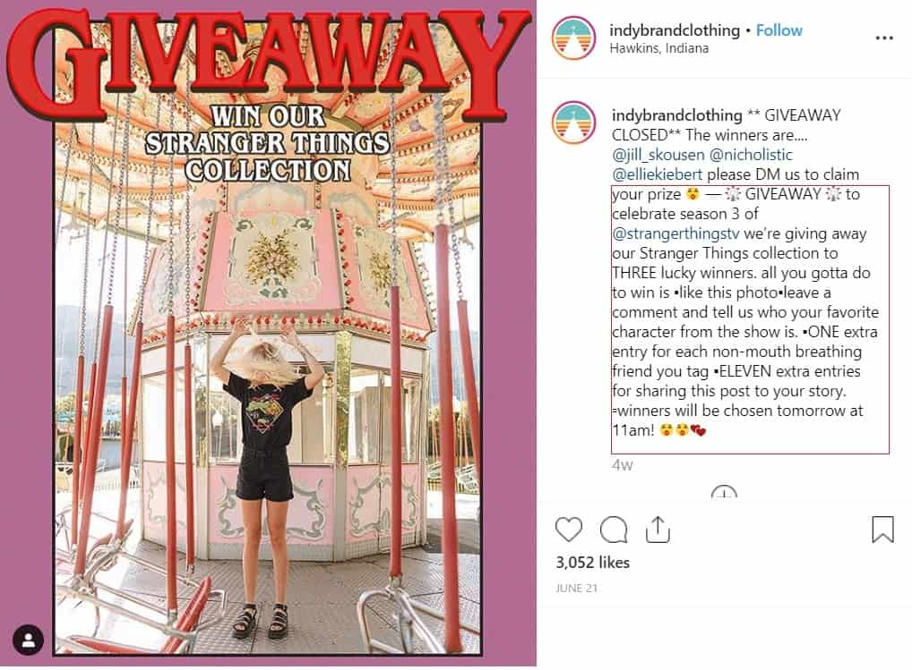
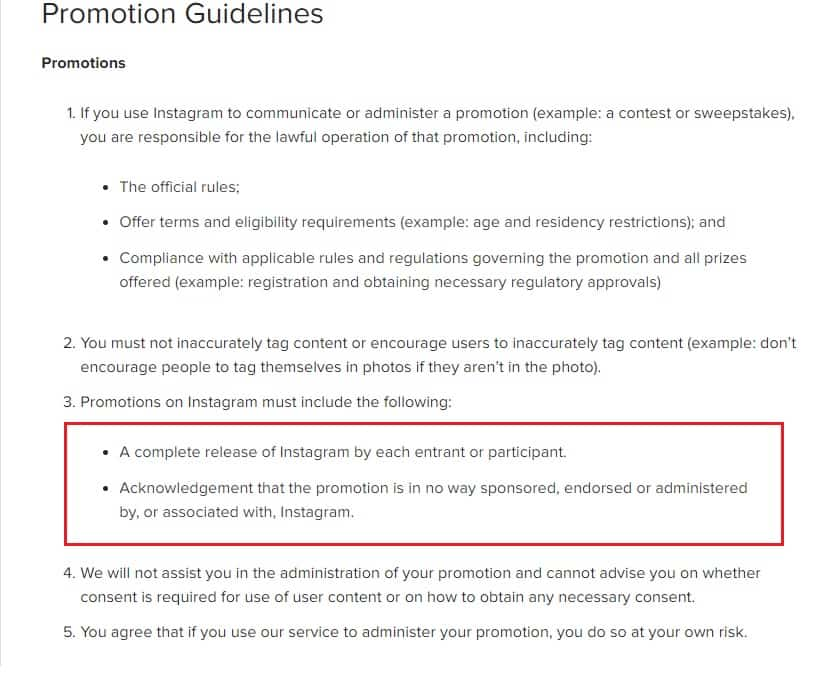
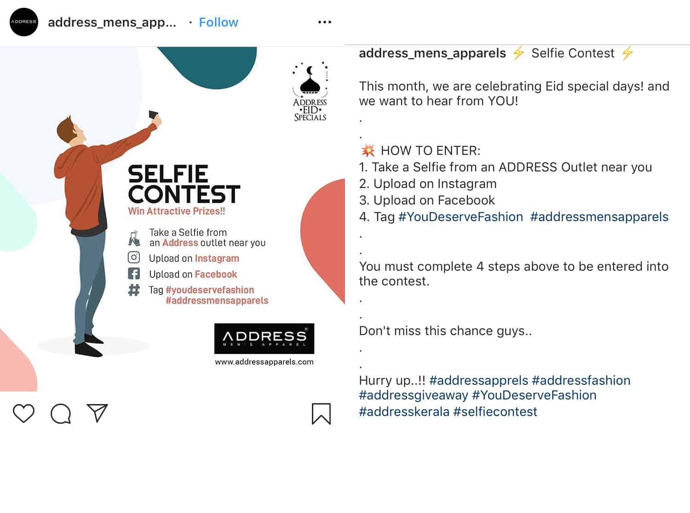
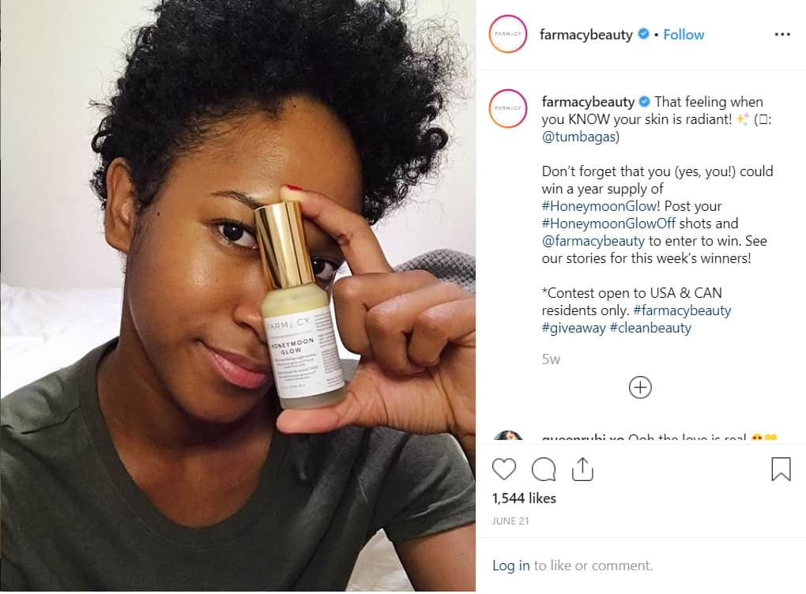

As of 2019, Instagram has over 1 billion active users. How do you stand out? Hosting an Instagram contest is an awesome way for you to gain attention.
Instagram contests will help you achieve short-term goals. However, hosting one isn’t as easy as winning one. Before you dive into your first giveaway, we’ll discuss a few important things.
In this post, we’ll take a closer look at how an Instagram contest can benefit your brand. Additionally, we’ll discuss the rules and basic tips for hosting a giveaway. Lastly, we’ve listed a few winning ideas you should try!
Why You Should Run An Instagram Contest
Grow Your Account
One of the biggest advantages of Instagram contests is they help you grow your account. This is especially beneficial for small, start-up brands.
For instance, you ran a contest where participants are asked to share an Instagram post. In doing so, you’ll reach a wider audience. Users who haven’t heard about your business will have a chance to check you out.
Based on the study conducted by Tailwind, accounts that host giveaways grow 70x faster than those who don’t.

Let’s face it, we all like free stuff.
Therefore, when users can get freebies by simply tapping the follow button, they’re more likely to do so. Give your audience a good reason to hit that button.
With that said, aside from giving incentives, you must also strive to provide valuable content.
Boost Engagement
An Instagram contest gets higher engagement than a regular post. In fact, according to Tailwind, Instagram giveaways get 3.5x as many likes and 64x more comments compared to normal content.
Contests usually require participants to like, comment, or share a post. The higher the engagement, the more likely a post will appear on a user’s feed as well as on Instagram explore. This will then attract new and relevant fans.

But don’t stop there!
Take advantage of the traction gained by your Instagram contest to build a relationship with your audience. Make sure that this engagement will last.
For one, keep your feed responsive by answering queries. More importantly, keep the conversation going.
Increase In Sales
Hosting a contest is basically giving away free samples of your product. The winner will be able to try it out. They can:
- Give a product review which helps boost product awareness.
- If they enjoyed your product, they’ll buy more from your brand.
- Lastly, they are more likely to recommend your brand to their followers.
Take a look at this unique Instagram contest by @indybrandclothing. They launched a giveaway in time for Stranger Things Season 3 premiere.

What they did right:
- Boost engagement by encouraging participants to like and tag friends
- Improve brand awareness by asking them to post in Stories
This giveaway will also give winners a chance to try their clothes. If they liked the quality, they’ll purchase more.
More importantly, an Instagram contest is also useful in capturing leads. Instead of reaching out to random accounts, you can look at the list of participants. These accounts are likely to be interested in your brand.
Collect User-Generated Content
Instagram contests are also perfect for collecting user-generated content you can use later on. For instance, you can run a photo contest. And as part of the Instagram contest rules, the winner will be featured in your account.

It’s a win-win situation. You can re-purpose the entries and the winners will feel valued. As a result, it helps build loyalty, encouraging them to support your brand more.
Ready to run your own Instagram contest? But first, you must know the rules!
How To Play By Instagram Contest Rules
While Instagram contests are a highly effective marketing strategy, it’s not as easy as they appear. You can’t simply host a last-minute giveaway. There are important Instagram contest rules you need to follow.
Instagram Contest Rules #1: Understand The Laws In Your Area
Laws and regulations in different regions are already complex. It’s twice as hard when applied to an online platform. This becomes even more complicated when you host an international Instagram contest.
With that said, familiarize the laws in your area. More importantly, hire a lawyer. In doing so, they can help review your Instagram contest mechanics and make sure you’re not breaking any law.
Instagram Contest Rules #2: Clearly State That Your Instagram Contest Is Not Associated With Instagram
Explicitly state that the contest or giveaway is in no way associated or sponsored by Instagram. This is one of the easiest Instagram contest rules to follow. Simply add a statement similar to this one:
“This contest is not sponsored by Instagram”

Instagram Contest Rules #3: Do Not Encourage Inaccurate Tagging
Instagram contests usually encourage participants to tag family and friends. In doing so, brands boost visibility and engagement.
But where do you draw the line to avoid breaking Instagram contest rules?
- Ask users to tag themselves or a friend in the comments section.
- Don’t encourage them to tag other users on a photo
- Emphasize that participants cannot tag your brand in a post where your products or services are not included.
Another option is to ask participants to use your branded hashtags. In doing so, you can easily track entries. More importantly, branded hashtags increase brand awareness. It puts your products in front of a larger audience.
Instagram Contest Rules #4: Clearly State Contest Mechanics
Make your contest mechanics simple and clear. Instagram contest mechanics are usually found in the caption.
However, some brands also put them on their website or blog. If this is the case, make sure to include the link in your bio throughout the contest duration.
What to include in a contest or giveaway guideline?
- Add eligibility requirements. This includes the specific location of the participants allowed. If it’s an international giveaway, then say that the contest is open internationally.
- List Instagram contest rules on how to enter
- Include the deadline for entries
- Disclose info about how the winner will be announced
Take a look at this Instagram contest hosted by @glowrecipe.

They included these important details in the mechanics:
- What their audience need to do to participate.
- When the giveaway will end
- Who can participate
- How the winners will be contacted
By clearly stating the mechanics, it lowers the chances of receiving repeated questions.
Instagram doesn’t usually flag posts with only minor issues. However, it’s best to be cautious and follow the Instagram contest rules.
Now that you know the basic Instagram contest rules, let’s take a look as these tips for hosting a giveaway!
Quick Tips For Hosting An Instagram Contest
Determine Your Goals
It’s best to have a plan before you start setting up a contest or giveaway. First, you need to have a goal.
What do you want to achieve from this marketing strategy?
Some of the most common objectives include:
- Boosting brand awareness
- Drum up audience excitement for a product launch
- Grow your Instagram account
- Attract more engagement in your post
Let’s look at this example from @supergoop, a beauty brand that focuses on UV protection. In this Instagram giveaway, they partnered with another known beauty brand, @summerfridays.

They also encouraged participants to like the post and tag someone.
So what do you think are their goals?
- Boost product awareness
- Increase engagement through likes and comments
- Grow their account through the “follow” guideline
Remember, your goals will help determine your Instagram contest rules – which brings us to our next point.
List A Detailed Contest Guideline
Now that you’ve determined your goals, it’s time to decide the mode of entry. Create clear guidelines on how your audience can participate.
- It should be written in your promotional material.
- Some guidelines are listed in the caption section.
So, make sure that your contest mechanics align with your goals. Most importantly, make it easy to enter!
As a tip, don’t go beyond 3 steps.
Take a look at this Instagram contest by @liahyoo. She listed 3 Instagram contest rules:
- Follow her account and her partner brand
- Like the post
- Tag a friend + product suggestion

These rules are very easy to follow which encourages her audience to participate. Plus, she opened up a conversation regarding the product.
Choose A Price
Avoid giving away prizes that are not brand-related. This may gain more entries; however, it’ll also attract freeloaders who aren’t interested in your products or services. Therefore, be strategic when choosing a prize.
Look at this post from @flackerscrackers. They are a food and beverage company that focuses on simple ingredients and superseed power.
In this Instagram contest, they are giving away a goodie box of their organic flax seed plus other products from their partner brands.

In doing so, they give the winners a chance to try their products. If they liked them, they’ll be more willing to buy more.
Tip: Consider giving away product samples. This is enough to entice the audience to participate.
You should also take into account your mode of entry. Say, for example, participants are asked to upload a photo, then you need a more convincing prize.
Promote Your Contest
Creating a guideline and setting the prize isn’t enough. Let your audience know that a giveaway is ongoing!
Make sure that your Instagram contest gets attention to achieve your goals.
So how do you spread the word? Here are a few tips:
- Promote it to your Instagram stories
- Post it on your blog or website
- Create an attractive, high-quality content related to your giveaway
- Cross-promote it to other social media platforms
- Use popular hashtags like #instagramcontest, #contestarlert, #ad
Tip: If you need more entries, consider posting a reminder. Look at how @beeswrap handled their giveaway promotion.

Another option is to partner with influencers in your industry. In doing so, you’ll not only promote your giveaway but also tap into their audience.
Winning Instagram Contest Ideas
Like And Tag To Win
This is one of the most popular Instagram contest ideas.
You’re simply asking participants to like the photo and tag a friend. Of course, you can add other mechanics. For example, you can ask your audience to leave a comment as to why they want to win.
Take this example from @glowrecipe. Aside from asking participants to like the post, they also encouraged discussion in the comment section.

Most brands and influencers use likes and tags as modes of entry. Why?
- It’s very easy to participate
- Improves organic reach
- Boosts brand visibility
Selfie Contest
If you’re looking for fun Instagram contest ideas, consider a selfie contest!
For instance, you can ask participants to submit their photo along with your product. This will help you boost brand awareness. Plus, you can also use the entries as UGC.
Look at this Instagram contest rules by @address_mens_apparels. They asked participants to post a selfie from any of their outlets. Plus, the selfies should be uploaded on Instagram and Facebook. This is cross-media promotion done right!

Photo or Video Contest
This is one of the best Instagram contest ideas if you need user-generated content. Additionally, this also allows your audience to promote your brand.
For instance, you can ask participants to post a photo of your product. Consider having a theme for a more cohesive look. Lastly, ask them to post it in their account and tag you.
Once the contest is over, you can feature the winning photo in your account. In doing so, the winner will feel appreciated.

To boost your reach, you can create a branded hashtag along with this Instagram contest. By using a hashtag, you can easily track entries. Plus, it’ll be quickly noticed by other users as well.
Look at this Instagram contest hosted by @farmacybeauty. They are giving away a year supply of their best selling products. To win such a coveted prize, participants should either:
- Upload a product shot plus a testimonial
- Share their before and after, bare-faced selfie
- A video of how they are using their product.

The mode of entry is challenging because the stakes are high! More than 100 users participated in this Instagram contest.
What Are You Waiting For?
When done correctly, an Instagram contest can help you achieve your goals. It’s a highly effective marketing strategy to grow your account.
Use our quick tips to get started. And take inspiration from the winning Instagram contest ideas we’ve listed. Lastly, don’t forget to follow Instagram contest rules and guidelines!
You May Also Like:


3 Comments